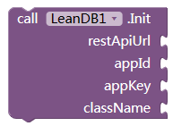
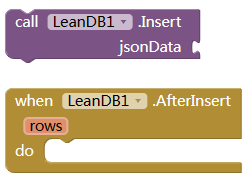
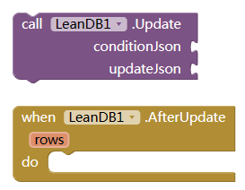
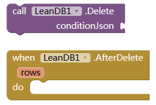
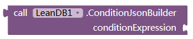
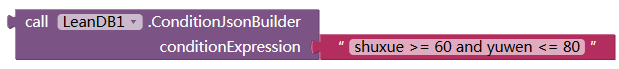
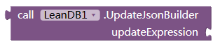
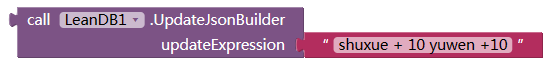
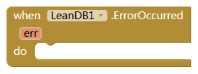

LeanDB扩展
LeanDB扩展可以作为app inventor应用的后端数据支撑。进行数据的增加、修改、删除、查询等功能。
准备工作
- 注册LeanCloud账号，网址是 https://www.leancloud.cn；可能需要实名认证；不想认证的，~~~请切换到国际版~~~ （国际版提供的域名不支持国内访问了）。
- 进入控制台，新建应用（相当于关系型数据库中的数据库）。我这里是新建了个应用 Jiaocheng；
- 进入应用，点设置，点应用Keys，将右侧的Appid，AppKey，Rest Api服务器地址记下；
- 创建一个新的Class（相当于关系型数据库中的表）。我这里新建一个Class，叫Scores。
- 注意权限设置那里，一定要选择“无限制”，否则后续可能无法修改或删除数据。
- 在Class中添加列时，一定要注意设置列的类型。否则后面如果把数字当成文本来更新，就会失败。
相关功能
初始化
使用上面准备工作中的数据初始化扩展。推荐在屏幕初始化中进行。

插入数据

| 参数名 | 类型 | 说明 |
|---|---|---|
| jsonData | String | 要写入的数据集 |
| rows | Number | 成功插入的数据个数 |
假设我们要在Scores中保存班级里面学生的考试成绩。要添加学生的一条考试记录（包括学生姓名、语文成绩、数学成绩），jsonData可以这样写
{"xingming":"张三","yuwen":89,"shuxue":96}
如果同时添加多名学生成绩，可以这样写
[
{"xingming":"张三","yuwen":56,"shuxue":89},
{"xingming":"李四","yuwen":69,"shuxue":83},
{"xingming":"王五","yuwen":98,"shuxue":87}
]
注意要加方括号（一条记录可以不用）。
查询数据
| 参数名 | 类型 | 说明 |
|---|---|---|
| keys | String | 查询记录中包含的字段。比如你想返回姓名和数学，就写xingming,shuxue，中间用半角逗号分隔。如果是想取回全部字段，可以设为空字串。如果全部返回，返回记录中除去我们手动添加的xingming、shuxue、yuwen等字段外，还有三个系统自己添加的：objectId（每条记录的id号）、createdAt（记录添加时间）、updatedAt（记录修改事件） |
| conditionJson | String | 记录符合的条件。为json格式。比如查询姓名是老王的纪录，可以写为{“xingming“:”老王“}。也可以使用字典组件构建，请参照leancloud文档查看写法。推荐用下面的conditionJsonBuilder来构造。如果想取回全部记录，可以设为空字串。 |
| order | String | 返回的记录按照哪个字段排序。比如我们要按照数学成绩降序排列，可以这样写：-shuxue。负号表示降序，正号或者没有符号表示升序。多个字段用半角逗号分隔。 |
| startIndex | Number | 从第几条开始返回。默认1 |
| maxCount | Number | 一次最多返回记录的条数。默认100 |
| rows | Number | 返回记录条数 |
| result | List | 返回的记录列表 |
更新数据

| 参数名 | 类型 | 说明 |
|---|---|---|
| conditionJson | String | 见上面查询数据部分 |
| updateJson | String | 要修改的数据，json格式。例如 {“xinging”:“zhang san”} 表示将符合条件的记录xingming字段改为zhangsan， 或者{“shuxue”:{"__op":“Increment”,“amount”:5}} 表示将shuxe字段的值自增加5。具体请查看leancloud文档学习更多写法。推荐使用下面的UpdateJsonBuilder来构建。 |
| rows | Number | 更新的记录条数 |
删除数据

参数含义同上面的块。
查询条件构造器

这个辅助块可以构造查询（或者更新或者删除）命令的conditionjson。可以更快速、更简洁的写出查询条件，减少出错率。
比如我们要查询“数学成绩大于等于60 并且 语文成绩小于等于80”的学生记录，手动写json这样写：
{"$and":[{"shuxue":{"$gte":60}},{"yuwen":{"$lte":80}}]}
其中的括号，冒号，引号，逗号太多，很容易出错。
如果使用这个生成器，可以这样写：

是不是非常的精炼，更加的符合自然语言。
- conditionExpress：条件表达式。半角空格（至少一个空格）隔开的字符串表达式，必须为三段。第一段为字段名，两侧不要有引号，第三段为要比较的值(文本或者列表需要用半角双引号括起来。其中有"双引号要写为\"。\要转义为\\)，第二段为比较符号，数字时支持=,<,<=,>,>=,!=，文本时支持like（模糊）,is（精确），时间用before或者after，查询数组用in,nin,all。多个条件用and或者 or连接，并前后留有一个或以上空格。（暂不支持用括号改变比较顺序）中间的比较符号目前支持以下几种：
| 符号 | 意义 | 举例 | 备注 |
|---|---|---|---|
| = | 等于 | shuxue = 80 | 比较数字 |
| > 或 gt 或 $gt | 大于 | shuxue > 80 | 比较数字 |
| >= 或 gte 或 $gte | 大于等于 | shuxue >= 80 | 比较数字 |
| < 或 lt 或 $lt | 小于 | shuxue < 80 | 比较数字 |
| <= 或 lte 或 $lte | 小于等于 | shuxue <= 80 | 比较数字 |
| != 或 ne 或 $ne | 不等于 | shuxue != 80 | 比较数字 |
| like | 包含（模糊查找） | xingming like “张” | 比较文本 |
| is | 等于（精确查找） | xingming is “张三” | 比较文本 |
| before | …时间之前 | createdAt before 2020-02-20T00:00:00.000Z | 比较时间 |
| after | …时间之后 | createdAt after 2020-02-20T00:00:00.000Z | 比较时间 |
| in 或 $in | 包含任意一个数组值 | id in “[2,3,4]” | 数组查询 |
| nin 或 $nin | 不包含任意一个数组值 | xingming nin “["老张","老李","老王"]” | 数组查询 |
| all 或 $all | 包括所有的数组值 | hobby all “["skating","reading"]” | 数组查询 |
| size 或 $size | 列表长度 | hobby size 3 | 数组查询 |
更新条件构造器

这个辅助块可以构造更新命令的更新json，更快速、简洁的写出数据更新json，减少出错率。
比如，我们要将姓名为‘张三’的学生的yuwen成绩和shuxue成绩分别加10分。我们可以这样手动写json格式的更新json：
{"shuxue":{"__op":"Increment","amount":10},"yuwen":{"__op":"Increment","amount":10}}
用本构造器来写，可以非常简单的用两个块来这样写：

更新表达式: 半角空格（一个或以上）隔开的字符串表达式，需要为3段。第一段为字段名，第三段为要改变的值(文本或者列表需要用半角双引号括起来。其中有"双引号要写为\"。\要转义为\\)。第二段是修改符号。如：’=,+,-‘操作数字。’to’操作字符串。‘add,addunique,remove’操作数组。如果修改多个字段，多个表达式之间用一个或以上半角空格分开。
中间部分的op操作符号支持以下：
| 符号 | 意义 | 举例 | 备注 |
|---|---|---|---|
| + 或者 += | 原字段值累加 | shuxue + 10 | 数字字段 |
| - 或者 -= | 原字段值累减 | shuxue - 10 | 数字字段 |
| = | 原字段直接赋值 | shuxue = 10 | 数字字段 |
| is 或者 to | 原字段直接赋值 | xingming to 张三 | 文本字段 |
| add | 数组添加项 | hobby add “[\“sleeping\”]” | 数组字段 |
| addunique | 数组添加不重复项 | hobby addunique “[\“sleeping\”]” | 数组字段 |
| remove | 数组删除项 | hobby remove “[\“sleeping\”]” | 数组字段 |
发生错误事件

| 参数名 | 类型 | 说明 |
|---|---|---|
| err | String | 错误原因 |